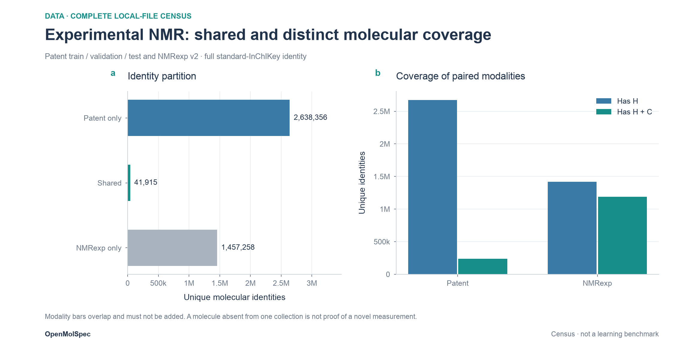
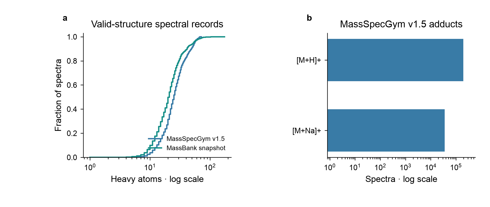
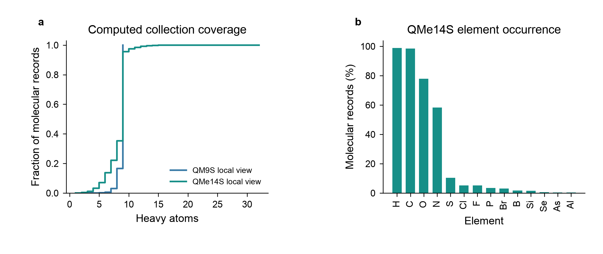
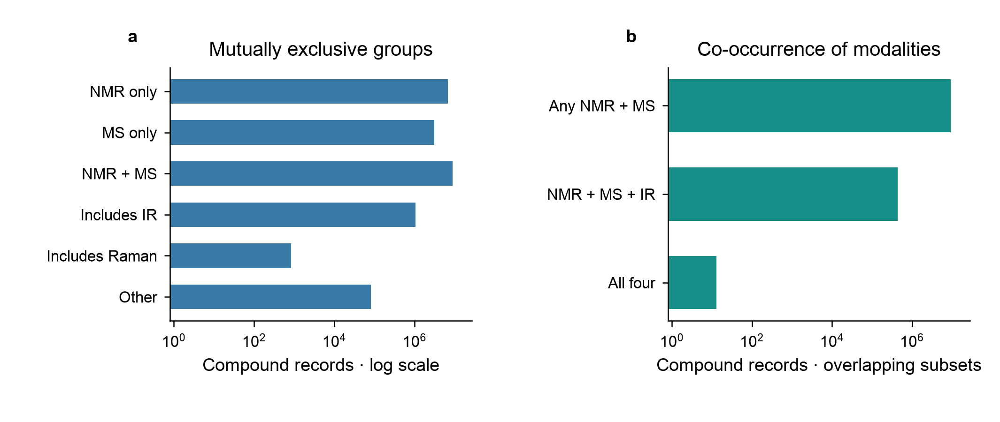

NMR · MS · IR · RAMAN
OpenMolSpec
A million scale dataset and platform for chemical spectroscopic deep learning.
Explore experimental measurements and computed observables. Choose a task, load data, call a model and build a reproducible learning workflow.

2.68Mcurated experimental H/C molecular identities
31active task definitions
82executed bilingual tutorials
DATA
Start from the measurements.
OpenDataLab identifies the team-curated experimental collection. External resources retain their original citations. Experimental and computed data, spectral entries and molecular identities are reported separately.
| Source / view | Domain | Verified local scope | Details |
|---|---|---|---|
| OpenDataLab · curated H/C view | Experimental | 2,680,271 standard molecular identities | Source / guide ↗ |
| NMRexp v2 · external reference | Experimental NMR | 3,372,987 spectra / 1,499,173 standard molecular identities | Source / guide ↗ |
| OpenMolSpec · computed test view | Computed | 20,390 records / 16,728 molecular structures | Source / guide ↗ |
| MassSpecGym v1.5 | Experimental MS/MS | 231,104 spectra | Source / guide ↗ |
| MassBank · local snapshot | Experimental MS | 120,512 MS2 spectra with valid structures | Source / guide ↗ |
| QM9S · local view | Computed | 129,817 mapped molecular records | Source / guide ↗ |
| QMe14S · local view | Computed | 181,920 molecular identities / 184,252 nonconstant IR–Raman pairs | Source / guide ↗ |
Collections can overlap and use different counting units. Each data card records its source, version, quality checks and access conditions. Fixed benchmarks and custom random / scaffold splits have separate manifests.



TASKS
Choose the question you want to answer.
Every task guide explains its purpose, inputs, outputs, model call, training route and objective, alongside recorded results.
| Task | Input | Output |
|---|---|---|
| Structure to 1H NMRnmr.forward.1H | Molecular structure; nucleus | Atom-indexed shifts (ppm) |
| Structure to 13C NMRnmr.forward.13C | Molecular structure; nucleus | Atom-indexed shifts (ppm) |
| Structure to 19F NMR: alignment auditnmr.forward.19F | Molecular structure; nucleus | Atom-indexed shifts (ppm) |
| Structure to 31P NMR: alignment auditnmr.forward.31P | Molecular structure; nucleus | Atom-indexed shifts (ppm) |
| Structure to 11B NMR: frozen diagnosticnmr.forward.11B | Molecular structure; nucleus | Atom-indexed shifts (ppm) |
| Structure to 29Si NMR: frozen diagnosticnmr.forward.29Si | Molecular structure; nucleus | Atom-indexed shifts (ppm) |
| NMR retrieval: H, s2mnmr.retrieval.h.s2m | NMR peaks; candidate structures | Ranked molecular structures |
| NMR retrieval: H, m2snmr.retrieval.h.m2s | Molecular structure; candidate spectra | Ranked spectra |
| NMR-to-SMILES generation: Hnmr.generation.h | NMR peaks; supplied molecular formula | SMILES candidates |
| NMR retrieval: C, s2mnmr.retrieval.c.s2m | NMR peaks; candidate structures | Ranked molecular structures |
| NMR retrieval: C, m2snmr.retrieval.c.m2s | Molecular structure; candidate spectra | Ranked spectra |
| NMR-to-SMILES generation: Cnmr.generation.c | NMR peaks; supplied molecular formula | SMILES candidates |
| NMR retrieval: HC, s2mnmr.retrieval.hc.s2m | NMR peaks; candidate structures | Ranked molecular structures |
| NMR retrieval: HC, m2snmr.retrieval.hc.m2s | Molecular structure; candidate spectra | Ranked spectra |
| NMR-to-SMILES generation: HCnmr.generation.hc | NMR peaks; supplied molecular formula | SMILES candidates |
| HOMO–LUMO gap prediction: IRvibrational.gap.ir | IR | HOMO–LUMO gap (eV) |
| HOMO–LUMO gap prediction: RAMANvibrational.gap.raman | RAMAN | HOMO–LUMO gap (eV) |
| HOMO–LUMO gap prediction: IR_RAMANvibrational.gap.ir_raman | IR, RAMAN | HOMO–LUMO gap (eV) |
| HOMO–LUMO gap prediction: IR + Raman + H/Cvibrational.gap.ir_raman_hc | IR, Raman, 1H, 13C | HOMO–LUMO gap (eV) |
| Conformer to IR and Ramanvibrational.forward | Elements and 3D Cartesian coordinates | IR and Raman spectra |
| Vib2Mol bidirectional retrieval with IR/Raman onlyvibrational.retrieval | IR, Raman; candidate structures | Ranked molecular structures |
| Vib2Mol generation with IR/Raman onlyvibrational.generation | IR, Raman | SMILES candidates |
| H/C peak-to-atom assignmentnmr.assignment | Known structure; observed H/C peaks | Candidate peak-to-atom assignments |
| H/C cross-solvent transfer: experimental-reference baselinenmr.solvent_transfer | Structure; source shifts; solvent pair | Target shifts and reference provenance |
| Vib2Mol candidate reranking with IR/Raman onlyspectroscopy.reranking | IR, Raman; candidate structures | Ranked molecular structures |
| Vib2Mol bidirectional retrieval with H/Cvibrational.retrieval.hc | IR, Raman, 1H, 13C; candidate structures | Ranked molecular structures |
| Vib2Mol generation with H/Cvibrational.generation.hc | IR, Raman, 1H, 13C | SMILES candidates |
| Vib2Mol candidate reranking with H/Cspectroscopy.reranking.hc | IR, Raman, 1H, 13C; candidate structures | Ranked molecular structures |
| Molecule to MS/MS with GLACIERms.forward.glacier | Structure; adduct; collision energy; instrument | MS/MS m/z–intensity peaks |
| Molecule to MS/MS with ICEBERGms.forward.iceberg | Structure; adduct; collision energy; instrument | MS/MS m/z–intensity peaks |
| MS/MS peak annotation with MAGMams.annotation.magma | Structure; MS/MS peaks; precursor conditions | Candidate fragment annotations |
TUTORIALS
Read the code. Inspect the result.
SDK inference
Call NMRNet on a real molecular input and compare measured peaks.
Open executed tutorial →Training workflow
Prepare train/validation data and inspect an explicit training plan.
Open executed tutorial →NMR Fourier transform
Simulate an FID and recover its frequencies.
Open executed tutorial →NMR inversion
Recover a relaxation distribution from simulated noisy signals.
Open executed tutorial →IR / Raman broadening
Connect normal-mode activities to continuous spectra.
Open executed tutorial →MS isotope envelopes
Explore isotope probabilities and resolving power.
Open executed tutorial →A familiar Python interface.
Use versioned local datasets and explicit model assets. Quick Start covers installation, inputs and the first reproducible result.
Dataset and model guide →from openmolspec.dataset import molspectra
from openmolspec.model import NMRNet
data = molspectra("opendatalab_nmr", root="/path/to/data")
model = NMRNet.from_pretrained(
"/path/to/models", nucleus="13C",
python="/path/to/nmr-env/bin/python")
result = model.predict("CCO")THEORY & INVERSION
Connect the learning task to the physics.
01
Nuclear magnetic resonance
Chemical shifts, spin coupling, FID and Fourier transforms.
02Mass spectrometry
Ion masses, adducts, isotope envelopes and fragmentation.
03Infrared & Raman
Normal modes, selection rules, response tensors and broadening.
04NMR inversion
Relaxation and diffusion kernels, regularization and recovered distributions.
Spectra Harness connects NMR, MS and vibrational model calls through Python, CLI and MCP. Usage and real execution records →
PHOTO GALLERY
Explore the actual results.
Recorded model outputs, RDKit candidate structures and complete-file data statistics. Open a figure to inspect it at full size; follow its guide for inputs, outputs and evaluation conditions.